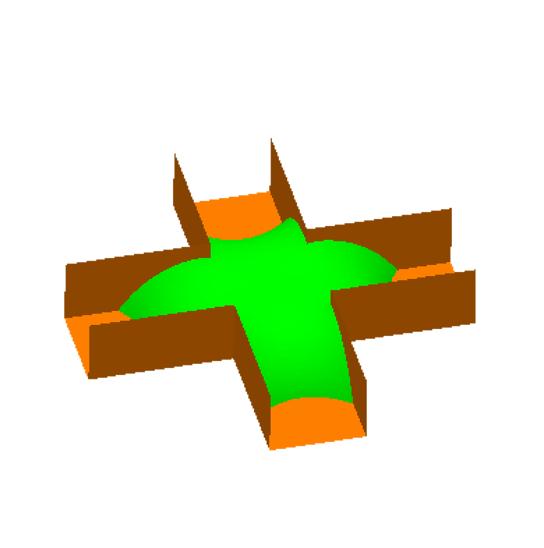
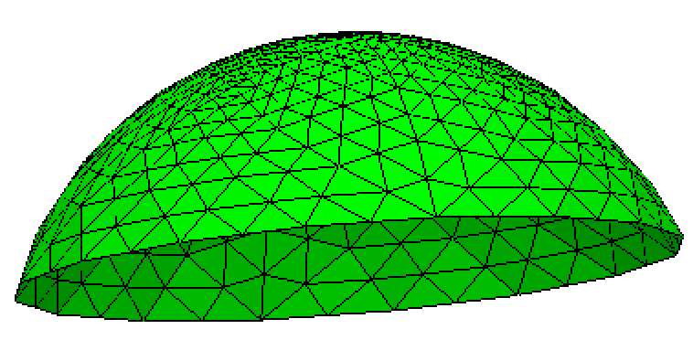
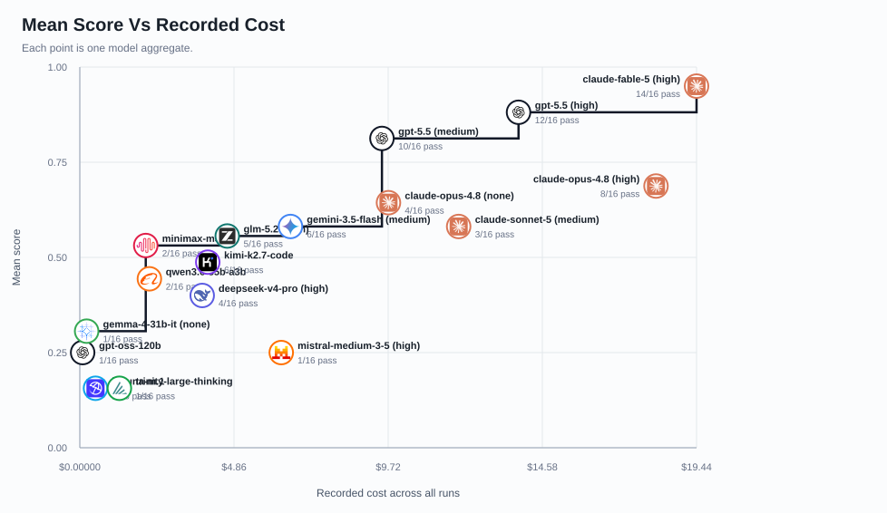
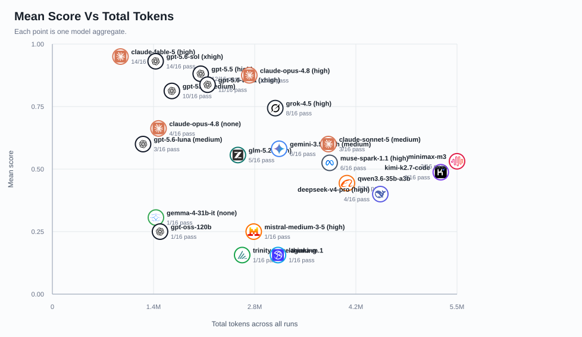
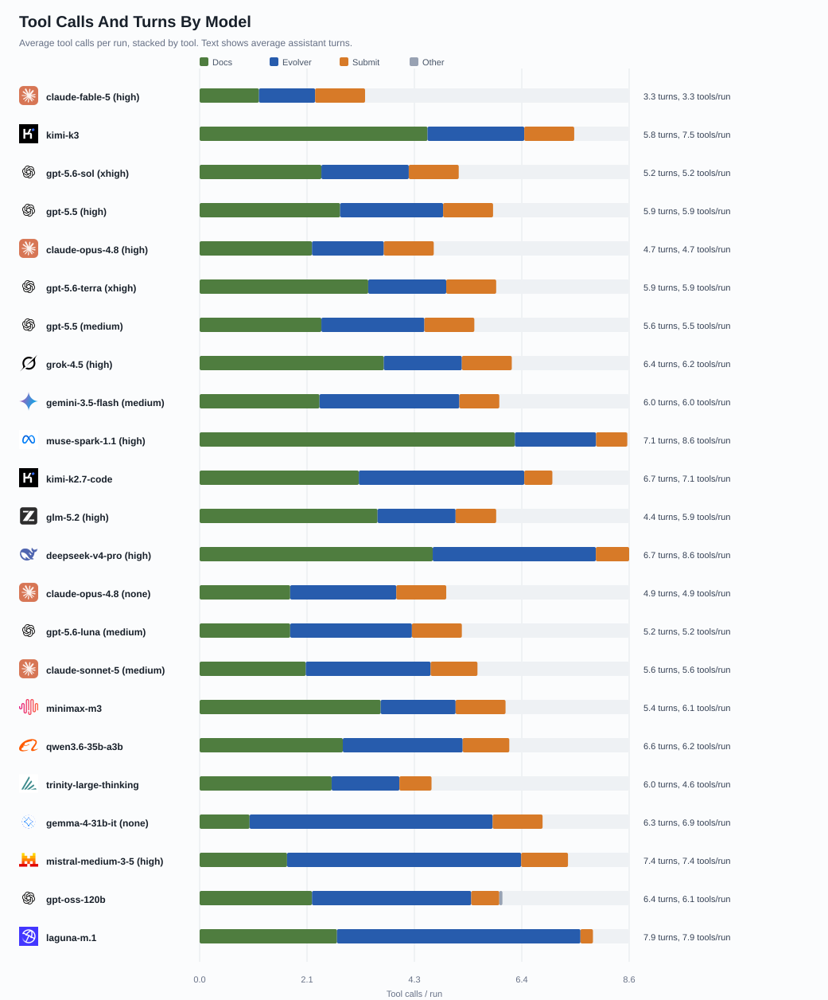
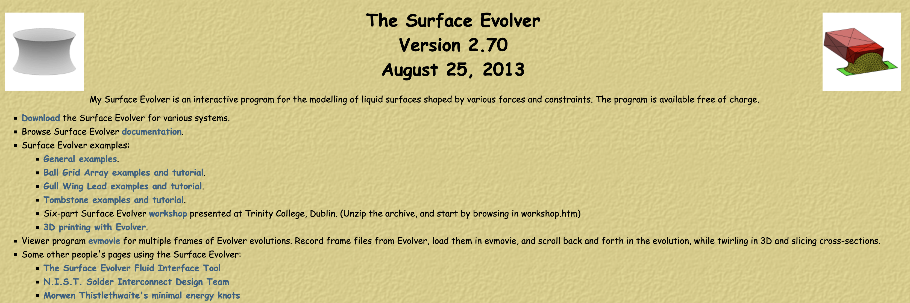

Surface Evolver Bench
How good are Large Language Models (LLMs) at writing complex physical simulations in a custom data format?



Introduction
Surface Evolver is a tool released in 1992 (!) for modeling liquid surfaces. It is useful for tasks such as studying solder deposition on chips, modeling liquid fuel tanks or designing lab-on-a-chip networks.
A simulation is defined using Evolver's custom datafile syntax: vertices, edges, faces, bodies, constraints, energies, and boundary integrals.
An example is a droplet sitting on a solid surface. Instead of explicitly meshing the wetted liquid–solid patch, we leave a "hole" in the mesh and compute its area from a line integral around the boundary (the contact line). For a flat patch in the z = 0 plane, using Green's theorem gives \[ A = \frac{1}{2}\oint_{\partial A} \left(x\,dy - y\,dx\right). \] This avoids the complexity of dealing with stretching/disappearing faces as the contact line moves. But it makes the datafile much harder to write correctly: orientation, constraints, contact-angle energies, and volume terms all have to line up.

What this eval measures
This eval tests LLMs' capacity to:
- Define complex 3D structures using vertices, edges and facets with minimal visual feedback.
- Apply physics-based terms such as contact-angle energies (representing hydrophobic or hydrophilic surfaces), gravity, external forces, volume constraints, and area minimization.
- Correctly use boundary and content integrals to account for omitted wetted surfaces.
- Generalize from sparse examples in a low-resource domain.
- Models are tasked with writing liquid simulations in a wide variety of scenarios, including complex configurations of grooves, wells and channels. Some similar tasks are illustrated at the top of the page.
How it is graded:
- No LLM-as-a-judge.
- For each task, I wrote a reference solution and simulated the converged liquid shape. For grading, the submitted shape’s volume, area, and energy are compared against the reference solution.
- There are partial points for submitting a valid file, having a correct initial geometry and writing constraints correctly.
- Concretely: Each model gets a task prompt and a small tool environment: it can read curated Surface Evolver docs, run a candidate .fe file, inspect Evolver output, repair the file, and finally submit the raw datafile. The final answer must arrive through a structured submission tool. Grading then runs static checks, hidden Evolver scripts, and metric checks against precomputed expected values.
Results





Why another LLM benchmark?
There are already many benchmarks out there, which naturally poses the question of why one would create yet another.
For one, I wanted to. I thought it would be a good way to improve my understanding of the current capabilities of LLMs, which it absolutely did. I also think it makes a genuinely good benchmark, with some nice aspects like limited training data, and it is truly agentic with the iterative submissions of the datafile. So what did I learn?
- You often hear "the harness is everything," and this is indeed true. The available tool calls, docs, and feedback loop make a huge difference for performance. My first versions had performance close to zero when docs were not accessible, the interaction with Surface Evolver was limited, etc.
- LLMs have a surprisingly strong understanding of 3D geometry. I usually need to make a large sketch of the surface I am simulating, but they can seemingly deal with 3D structures with 20-30 vertices, tens of edges and faces in pure text.
- LLMs are the real deal. There is a lot of debate over whether they are true intelligence, but clearly they can contribute significantly to a task that is challenging for many grad students from limited training data.
- You do not have frontier intelligence at home (unless you live in a data center). This is unfortunate, but in this benchmark no small model performs that well.
- OpenRouter is great for switching models with a unified API, but it seems too easy to run an open-source model through an unreliable provider with a misconfigured or heavily quantized model. I tried to run all models through the official provider only.
- I was initially quite concerned with reward hacking, but this did not happen. Maybe because the grading was kept somewhat opaque?
Also check out Ken Brakke’s Surface Evolver website if you haven't. It is a delightful throwback to the era of 90s web design by academics:
